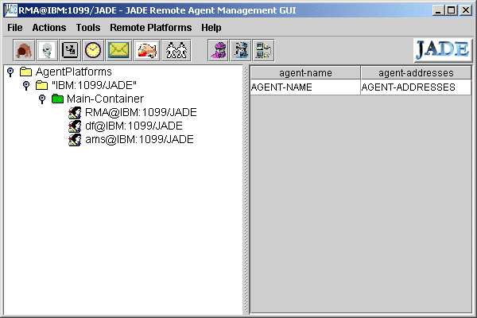
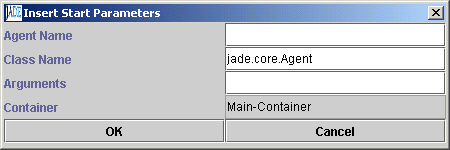
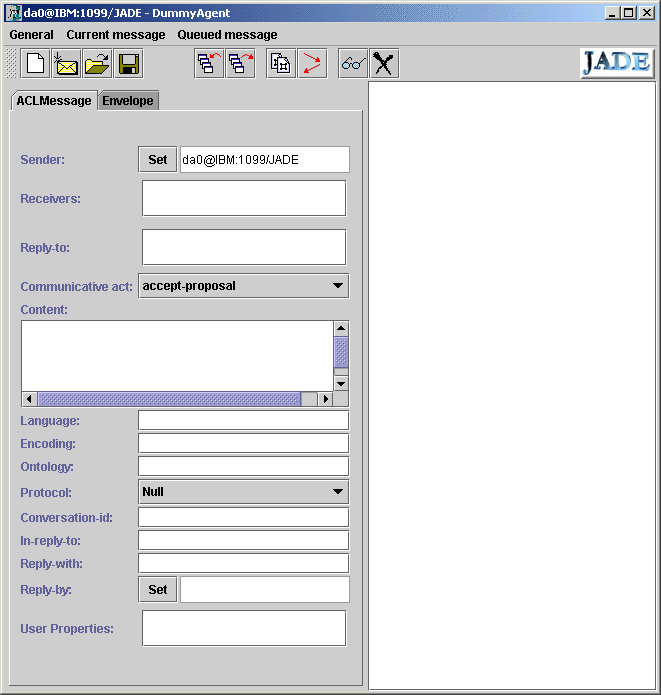
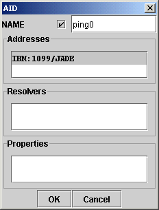

Then boot JADE (from the jade directory),
runjad -gui
You see this window (after you display the tree),
|  | ||
Notes on this image
- JADE agent platforms have containers to hold agents. A platform can have many containers, not necessarily on the same computer. One container on a platform is "privileged". This main container resides on the host which also runs the platform's RMI server. Agents on various containers on a platform use the RMI protocol to communicate.
- The image above shows the GUI of the Remote Monitoring Agent (RMA) which appears when you use the -gui switch. In addition to itself, the RMA shows the presence of two other agents in the Main Container. The ams is the Agent Management System. An agent itself, it provides an environment with many services for agents on the platform. The df is the Directory Facilitator. It is an agent which provides a "yellow pages" for agents known to the platform.
- Agents residing on a platform must have unique names. A name is a "nickname" and an address separated by the at (@) sign. For example, RMA@IBM:1099/JADE is an agent with nickname RMA at the address IBM:1099/JADE. ("IBM" is the name of my Win2000 machine on a LAN.
- The addresses are in RMI format in this case. RMI is used for intra platform communication. (CORBA or HTTP are used for inter platform communication.) The address consists of a host name, in this case IBM, and a port on which the RMI naming service is active, in this case, 1099, the default port for RMI,1099. The name JADE distinguishes JADE RMI invocations from other possible RMI services. Note that in this case, the host name does not have a domain attached. If you wanted a full name you can use the -host switch: java jade.Boot -gui -host jupiter.scs.ryerson.ca, for example. There is also a -port switch if you don't like 1099.
Running Some Agents
We will use the DummyAgent which can be launched by clicking a button on the RMA, and the PingAgent which is an example provided with the Jade distribution. First you need to compile the PingAgent.
Compiling the PingAgent
The source for the PingAgent is in the src\PingAgent directory. I moved it to examples\PingAgent\ under the jade directory. This directory structure matches the package structure declared in the PingAgent.java source file.
You need to compile the PingAgent. I find it convenient to use another one line batch file for compilation (from the Jade directory). The one line might be:
javac -classpath .\lib\jade.jar;.\lib\jadeTools.jar;.\lib\iiop.jar;.\lib\commons-codec\commons-codec-1.3.jar;. %1 %2 %3 %4 %5 %6 %7 %8 %9
(all on one line)
I call this file compilejade.bat.
Then compile the Ping Agent with,
compilejade examples\PingAgent\PingAgent.java
Loading the PingAgent into a Jade main container
There are two ways to load agents, using RMA, and from the command line when booting JADE.
Loading agents with the RMA
In the RMA window, select Main-Container, then click the New Agent button (or use the Actions menu). Or you can right click on the Main-Container, and choose Start New Agent. This window pops up:

Enter a name for the agent, say ping0. (In this window just use the nickname of the agent, that is, leave out the address. The address will be filled in by the system.)
Then enter the fully qualified agent class name. In this case, examples.PingAgent.PingAgent. If your class paths are set correctly, after you click OK, the name ping0@IBM:1099/JADE will appear in the Main Container listing. (Of course, the host name will be yours, not mine :-).) If the class cannot be found, JADE will ignore your and may print an error on the Java Console (maybe).
Loading Agents when booting JADE
To carry out the same task as above you could have typed,
runjade -gui ping0:examples.PingAgent.PingAgent
and loaded the Ping Agent right away. Note the syntax with the agent nickname separated from its fully qualified class name by a colon. You can load any number of agents this way. Just separate them with spaces. It is also possible to have command line arguments for your agents. See the Administrative Guide.
The Dummy Agent
The Dummy agent has its own button on the RMA. Select the Main containe on the RMA and click the button to bring up the DummyAgent window. The Window looks like this:

A formidable form indeed. The form shows the slots for an Agent Communicative Language Message (ACLMessage class in JADE) as specified by the Foundation for Intelligent Physical Agents (FIPA).
Fortunately, at this stage you don't need to know anything about ACL. Nor do you have to fill in many fields. The fields you do need to deal with are, receivers, communicative act, and content.
receivers. The receiver is the ping0 agent. With its pointer on the receivers box, right click the mouse and select "add". The AID (Agent ID) window appears.

Fill in the form in the manner shown and click the OK button. You do not need to fill in the address field since bot the PingAgent and the DummyAgent are on the same platform. JADE fills in the address for you.
Note the check box. Checking it means the name is local (ping0) in this case. If you don't check it you need to enter the full agent name: ping0@IBM:1099/JADE. This would be useful if your message was going to an agent on a remorte platform.
Back in the DummyAgent window, select QUERY-REF for the communicative act. In the content field, type in the word "ping". (These settings are required by the PingAgent. See comment on the PingAgent.java source file.)
Send a message
Finally click the send the message by clicking the send button (second from left).
In the right pane of the DummyAgent window two lines appear, one red, the other blue. The most recent is the topmost. Blue refers to sent messages, red to received messages. You have something like this:

You can examine the received INFORM message (sent by the ping0@IBM:1099/JADE agent by selecting it and then clicking the button with the "glasses" icon.
The ping agent has replied "alive". [In versions of JADE previous to version 2.5, the Ping Agent replies "(pong)".]
Shutting Down the Platform
In the RMA window, choose Shut down platform. Sometimes this does not work. In this case just type ctrl-c in the Java console window to shut down the JVM.